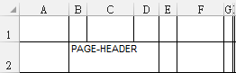

UDE Reports
文件結構
不同的文件格式，因為用途不同，所以支援的特性與文件結構多少有所差異。例如 PDF/WORD 文件用於輸出已排版完成的文件；CSV 格式通常作為資料交換用途，提供其它程式讀取；EXCEL/ODS 試算表格式兼且編輯與輸出用途，若以 CSV 格式代替不盡然可以滿足使用者需求。
在過去經歷專案中，許多報表軟體號稱可以用同一份表樣輸出為不同格式的文件，但通常只是形似而神不似。例如一張較複雜的 PDF 報表輸出為 EXCEL 時，可能會用多個儲存格合併輸出單一欄位值或者以重複輸出 PAGE-HEADER / COLUMN-HEADER 儲存格。這樣雖然印表輸出的結果看起來一樣，但是使用者卻難以用於後續的編修處理。最後為了確實滿足客戶需求，製表人員還是得針對不同格式，分別產生不同的表樣。
範例：隨意拉出的報表樣式，產為EXCEL格式時，出現過多的合併儲存格

針對過去種種專案需求，UDE-Report 方案是使用底層 API—如 itext、poi，產出目的文件，並透過簡化API、規劃類別結構等等方法，減少處理文件一致性所付出的開發成本。
表樣
UDE-Report 相較其它市面上報表軟體的 主要差異，在於以實作 java 程式類別設計表樣， 而非提供視覺化環境編輯表樣 metadata ( xml 或其它自定格式)。因為過往專案中，總是有部分需求必須以客製化程式處理，UDE-Report為因應這些客製化需求，其設計重點便在於簡化及統整第三方元件的 API 使用模式。
但使用java程式設計表樣，同樣會遇到屬於 Java 的程式議題，不良的 coding 成品容易造成表樣微調困難，開發／維護門檻較其它視覺性工具為高。團隊必須維持一份良好的設計原則、編程慣例，以保障相關表樣程式的可維護性。
Java 類別結構
文件內容輸出：xxxDocument
UDE-Report 針對支援的文件格式，提供對應的 Document 類別，如PDFDocument、ExcelDocument，只要建立類別實例，即可輕易使用各自提供的函式，輸出對應文件檔案內容。CSV 格式則因為操作方式單純，故直接使用 Apache Commons 中的 CSVPrinter 輸出。
文件檔案輸出：xxxGenerator
更進一步包裝文件產出類別，便是 DocumentGenerator —— 文件產生器的最上層介面。這個架構處理檔案 IO 開檔到關檔之間的雜務，還有多個文件分節組裝的相關機制。依目前對文件格式的支援，分別有 PDFGenerator、ExcelGenerator、CSVGenerator 等介面，自訂的表樣類別只要實作以下函式，產出文件內容即可。
void generatePDFContent(PDFDocument pdfDocument); // PDFGenerator
void generateExcelContent(ExcelDocument<?, ?> document); // ExcelGenerator
void generateCSVContent(CSVPrinter csvPrinter) throws IOException; // CSVGenerator
典型的專案會據以設計一或多個抽象類別，以處理專案自有的業務邏輯。
UDE-Report 是對於第三方製表元件的通用包裝，至於專案各自的一致性需求，就需要SA/SD的規劃。
一般來說，會有一個共用的最上層抽象報表類別，實作所有格式輸出介面，以負責專案中的共通需求：可能是一些 protected 屬性或函式。其下可能會再依文件性質，如：統計表、申請書(收據/收執聯)、資料清冊、套表輸出…，再拆分繼承架構，以統一頁首、頁尾、浮水印等設計樣式。也會有一個或多個清單 Enum 類別，定義專案內所有表樣，並載明共通特性定義，如報表名稱、輸出結果保存方式、浮水印樣式等，使共通的抽象表樣類別據以完成輸出。當然，還可以規劃報表輸入參數類別架構，用於傳入那些執行期才可以決定的參數內容。
以下是一個簡單的參考範例，實際使用時，請務必依實際需求重新規劃。
- 共通文件結構範例：AbstractReport